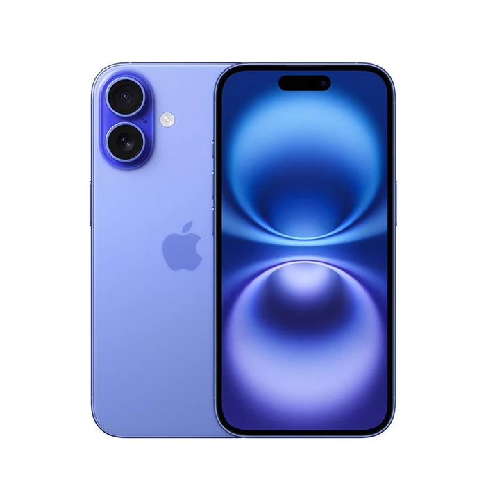
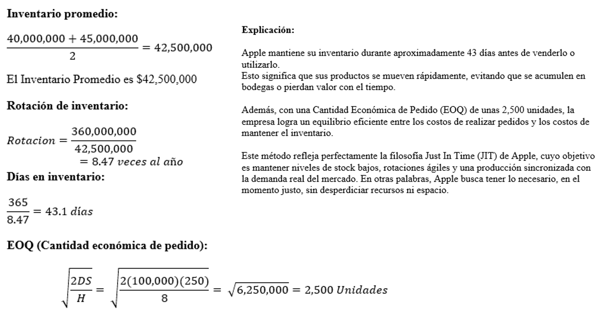

Sistema de Inventario
Apple Inc.
Gestión eficiente de inventarios basada en los métodos Just In Time (JIT) y Sistema Perpetuo, aplicados a una de las empresas tecnológicas más importantes del mundo.
Información de la Empresa
Apple Inc. utiliza dos sistemas principales de inventario:
- Just In Time (JIT): Minimiza inventarios, fabrica o recibe materiales justo antes de usarlos.
- Sistema Perpetuo: Actualiza en tiempo real el valor y cantidad del inventario mediante sistemas ERP.

Fórmulas de los Sistemas de Inventario
📦 Sistema Just In Time (JIT)
- Inventario Promedio: (Inventario inicial + Inventario final) / 2
- Rotación de Inventario: COGS / Inventario promedio
- Días en Inventario: 365 / Rotación
- EOQ (Cantidad Económica de Pedido): √((2 × D × S) / H)
El sistema JIT busca mantener niveles mínimos de inventario, produciendo o recibiendo materiales justo antes de su uso.
💻 Sistema de Inventario Perpetuo
- Actualización de inventario: Inventario final = Inventario inicial + Compras – Ventas
- Costo de ventas: COGS = Inventario inicial + Compras – Inventario final
- Valor de inventario: Registro en tiempo real por unidad vendida o comprada
Este sistema actualiza de forma continua los registros del inventario y costos, permitiendo información precisa y decisiones rápidas.
Problema
Situación: Apple fabrica componentes para el iPhone bajo el sistema Just In Time (JIT). Durante el año se registran los siguientes datos:
- Inventario inicial: USD 40,000,000
- Inventario final: USD 45,000,000
- COGS: USD 360,000,000
- Demanda anual (D): 100,000 unidades
- Costo por pedido (S): USD 250
- Costo de mantener (H): USD 8
Preguntas:
- ¿Cuál es el inventario promedio del año?
- ¿Cuál es la rotación de inventario?
- ¿Cuántos días en inventario mantiene Apple en promedio?
- Calcule la Cantidad Económica de Pedido (EOQ).
- Interprete brevemente los resultados.
Solución Gráfica
A continuación se muestra la representación visual de la solución al problema planteado:
